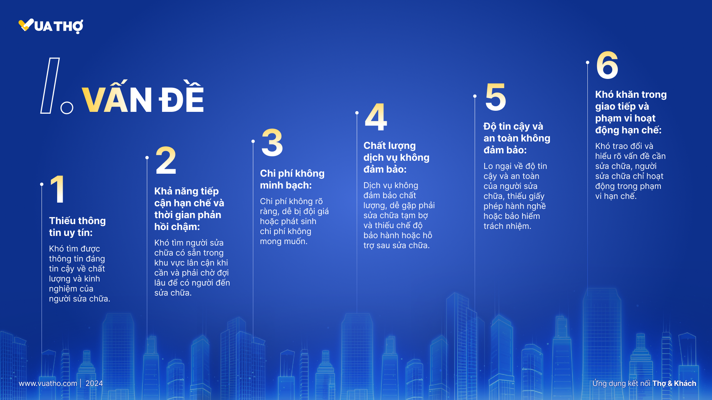

Vua Thợ
Ứng dụng kết nối Khách Hàng với Thợ của mọi ngành nghề

Sứ mệnh của Vua Thợ là cung cấp dịch vụ sửa chữa, xây dựng uy tín, chất lượng với giá cả hợp lý, giúp khách hàng an tâm và hài lòng.
Lộ trình sản phẩm
Chúng tôi đã xây dựng ứng dụng trong thời điểm kinh tế dần trở nên khó khăn, thất nghiệp diễn ra ở khắp nơi, chúng tôi muốn làm gì đó cho những người đang chơi vơi ngoài kia, những người có nghề trong tay nhưng vẫn chưa thể kiếm ra việc làm vì nhiều lý do.
Xuyên suốt dự án này, tôi đảm nhận vai trò thiết kế UX UI và mọi người trong team dev cùng tôi thảo luận và làm cùng nhau.


“Tôi đã khá lo lắng vì đây là dự án đầu tay của tôi, và cũng một phần là do team chỉ có mình tôi là UX UI, mọi thứ tôi đều phải tự mình tìm tòi thử đi thử lại, làm xong lại hội ý cùng anh em dev và sếp tôi. Nhưng rồi mọi chuyện cũng ổn thỏa, và tôi cũng đã học hỏi được rất nhiều điều từ dự án này.”
Trải nghiệm Onboard mượt mà
Bằng cách tích hợp đăng nhập qua số điện thoại, Vua Thợ mang đến một trải nghiệm khởi đầu đơn giản cho bất kỳ người dùng mới nào.

Biểu tượng đạo đức cho sản phẩm
100% đối tác xuất hiện trên Spoor đều là các thương hiệu có đạo đức. Nhãn mác mỗi sản phẩm đều gắn các biểu tượng bền vững để chứng minh rõ ràng những giá trị tốt đẹp mà sản phẩm đó đang ủng hộ.
“Bức tường đề xuất sản phẩm thật tuyệt. Đây là một định hướng xuất sắc dành cho những người dùng luôn mong muốn mua sắm các mặt hàng sản xuất công bằng.”
Câu chuyện đằng sau mỗi tấm áo
Người dùng hoàn toàn có thể hiểu sâu hơn về câu chuyện cuộc đời của từng món đồ: chi phí tạo ra chúng, vật liệu từ đâu, chúng ra đời tại nhà máy nào, và việc mua chúng sẽ tạo ra những tác động tích cực thay đổi thế giới như thế nào.
Đo lường tác động bằng Huy hiệu
Hệ thống Giải thưởng và Huy hiệu (Awards) của Spoor đo đếm trực quan mọi tác động tốt của bạn thông qua việc gamification (game hóa) để giữ chân người dùng. Những người dùng trẻ tuổi cực kì dễ đạt được khung bậc khoái cảm "Aha moment" khi trải nghiệm cảm giác như khi thăng cấp trong game.
Các bước tiếp theo
- Tiến hành nghiên cứu người dùng sâu hơn để xác định chính xác các điểm đau (pain points) thực tế.
- Thực hiện các đợt Usability Test (kiểm tra tính khả dụng) và tiếp tục lặp lại chỉnh sửa thiết kế.
- Trình bày và đo lường tính khả thi của ý tưởng với các bên liên quan khác trong dự án.
- Phát triển mở rộng thêm các tính năng như hướng dẫn chăm sóc sản phẩm vào trang thông tin. Qua đó khuyến khích người dùng giữ gìn quần áo của họ theo cách thân thiện môi trường nhất, cũng như chuyển đổi các giải thưởng ảo thành phần thưởng thật.
Phản tư (Reflection)
Nhiệm vụ "Bất Khả Thi": Chỉ với vỏn vẹn 3 ngày cho mọi công đoạn thiết kế, việc soạn thảo ra một kế hoạch làm việc rõ ràng và chia nhỏ các siêu task tử thần thành những viên kẹo nhỏ là cực kỳ sống còn. Chúng tôi dựa vào các công cụ năng suất như Kanban Board để siết chặt tiến độ. Quá trình này cứu rỗi chúng tôi khỏi việc bùng nổ căng thẳng.
Ác quỷ giấu mặt trong chi tiết: Dưới áp lực của kỳ sprint định mệnh 3 ngày, để giữ được sự đồng điệu trên hàng chục chi tiết thiết kế là viễn cảnh gần như viển vông. Tôi đánh phủ đầu bài toán này bằng cách phải thiết lập xong Design System (Hệ thống thiết kế) trước khi làm bắt cứ thứ gì. Và tôi cũng dành luôn tận 2 tiếng cuối cùng chỉ để rà soát soi lỗi UI trong lúc đồng đội vật vã viết báo cáo nộp dự án.
Cảm ơn bạn đã cuộn tới trang cuối cùng.